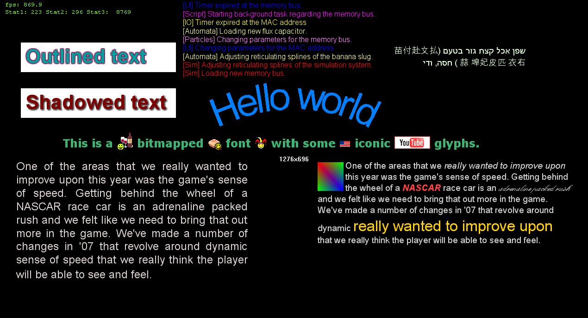
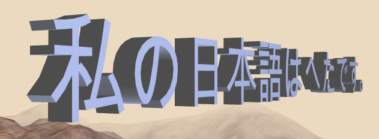

This is a document which describes how to do various things with EAText, though much of the discussion applies if you are using something other than EAText.
Some of the discussion in this document refers to the EATextRNA demo, which is part of the EATextRNA package. The following is a screenshot of the demo which should help provide context for the discussion.

The question of how to draw shadowed text may be the most oft-asked question about EAText. There are basically two solutions:
The problem with kEffectShadow is that it produces inferior shadows and in fact in some cases can produce drawing errors when a shadow of one glyphs draws over the body of another glyph. This error is most often seen when drawing non-Western text or when drawing Western text that is very tightly spaced. The bigger/fuzzier the shadow, the more likely this error. But bigger/fuzzier shadows are key to making pleasant looking shadows.
Drawing the text in two (or more) passes results in much nicer looking shadows and avoids the aforementioned overlap errors. The problem with it is that it requires multiple drawing passes. At the very least, you need two passes: one for a shadow and one for the glyphs. But how do you make a fuzzy shadow? You can either draw glyphs multiple times with offset and alpha, or you can come up with a GPU shader program that implements this (usually via multi-sampling as it draws). The EATextRNA package demo provides an example of the former solution. The latter solution turns out to be less easy than it might seem due to the way pixel programs work, but there is probably a viable means of doing this. Another method of drawing shadows is to simply use a bitmapped font of shadows.
In any case, there is no single simple solution to solving this problem properly, as should be obvious from the kEffectShadow discussion above.
Outlined text has issues similar to shadowed text (discussed above). However, if text outline thickness is less than two or three pixels you successfully implement outlined text via a single pass. The kEffectOutline style from EATextStyle implements the automatic outlining of glyphs from TrueType font files. This results in mediocre quality, whereas a bitmapped font generated by Photoshop results in better quality. As with shadowed text, you can implement outlined text via a multi-pass technique. An basic example of this multi-pass technique is shown in the image at the top of this file.
Writing an engine for displaying a subset of HTML (e.g. varying fonts, boldness, italics) isn't very hard if you use EATextTypesetter, as it provides explicit support for styled text layout. An engine that fully supports HTML-level formatting would require a bit more work, though you'd still want to use Typesetter underneath as the core line layout engine. The EA XHTML package implements a fairly complete and correct XHTML parsing and display engine on top of EAText. The EATextRNA package demonstrates basic styled text layout with wrapping around graphics.
Here is some sample code for specifying a paragraph of multi-styled text with Typesetter:
TextStyle textStyleNormal; wcscpy(textStyleNormal.mFamilyNameArray[0], L"Arial"); textStyleNormal.mfSize = 14; TextStyle textStyleItalic(textStyleNormal); textStyleItalic.mStyle = kStyleItalic; TextStyle textStyleBoldItalic(textStyleNormal); textStyleRedBoldItalic.mfWeight = kWeightBold; textStyleRedBoldItalic.mStyle = kStyleItalic; TextStyle textStyleDifferentFont(textStyleNormal); wcscpy(textStyleDifferentFont.mFamilyNameArray[0], L"Times New Roman"); TextStyle textStyleLargeRed(textStyleNormal); textStyleLarge.mfSize = 24; textStyleLarge.mColor = 0xff00d0ff; typesetter.AddStyleChange(&textStyleNormal); typesetter.AddTextRun(L"She "); typesetter.AddStyleChange(&textStyleItalic); typesetter.AddTextRun(L"sells "); typesetter.AddStyleChange(&textStyleBoldItalic); typesetter.AddTextRun(L"seashells"); typesetter.AddStyleChange(&textStyleDifferentFont); typesetter.AddTextRun(L"by the "); typesetter.AddStyleChange(&textStyleLargeRed); typesetter.AddTextRun(L"seashore.");
The above results in the following: She sells seashells by the seashore.
While EAText supports underlined text, code that uses EAText for underlines needs to have support for it, since lines are drawn though a different mechanism than glyphs are. The layed out underline information is available in the LineLayout generated by Typesetter, through the LineLayout::GetGlyphDecoration function:
class LineLayout
{
.
.
/// Gets underline, strike-through, overline information for the given
/// selected range of text. Note that only a single DecorationFlag type
/// may be used per call, for efficiency reasons. You can always call this
/// function multiple types with different DecorationFlags values.
eastl_size_t GetGlyphDecoration(DecorationFlags decoration, index_t iCharBegin, index_t iCharEnd,
RectangleSet& rectangleSet, LayoutSettings* pLayoutSettings = NULL,
float fVerticalOffset = 0.f) const;
.
.
};
If you are using the UTFWin package to draw text, UTFWin's WinTextEdit ought to be drawing the underlines itself in the WinTextEdit::OnRebuild function. But as of Feburary 2012 that code hasn't been written, though it's now in the to-do list.
If you are using the XHTML package to draw HTML, then it already does the right thing drawing this.
If you are using EAText Typesetter directly, then you need to call the LineLayout::GetGlyphDecoration function above and draw the lines. The lines are specified as rectangles because they have thickness. The means by which the lines are drawn is dependent on the graphics API you are using.
EAText supports curved text via EATextBaseline.h/cpp. The EATextBaseline module takes an existing LineLayout (usually generated by Typesetter) and makes a new LineLayout which follows a user-specified curve. The user-specified curve can be a basic Bezier curve of the user's specifications or the user can completely override the curve by implementing an instance of the BaselineIterator class. The text can follow the curve along the bottom of the text, the top of the text, or through the middle of the text.
The EATextRNA demo provides an example of how to draw curved text, and there is a picture of it above in this document. The relevant code consists of the following:
const EA::Text::index_t glyphCount = mTypesetter.LayoutLine(mText.c_str(), mText.size(), 0, 0, &mTextStyle); mGlyphMesh.mGLIExArray.resize(glyphCount); mBaselineIteratorDefault.MakeSemicircle(EA::Text::Point(0, 0), 400.f, 0.f, true); baselineLayout.FollowBaseline(&mTypesetter.GetLineLayout(), mGlyphMesh.mGLIExArray.data(), mpBaselineIterator, 0.f, 0.f, EA::Text::kHACenter);
EATextBaseline produces glyphs that are at rotated angles, and thus the glyph mesh used to store them has more vertex points than does a glyph mesh used to draw regularly oriented text. Your rendering code will need to be able to recognize this additional vertext information. The EATextRNA demo provides an example of this.
It should be noted that since glyphs are usually implemented as bitmaps (either from bitmap fonts or rendered from TrueType fonts), they don't generally display very well when rotated unless they are of a fairly large size. To deal with this you can make them large sized, you can use polygonal fonts (see EATextPolygonFont) , or you implement some mechanism to draw angled glyphs better from TrueType font files. EAText doesn't have built-in support for high quality rendering of TrueType font glyphs at angles; nor is this an easy problem to solve because TrueType fonts are explicitly designed for vertical orientation (i.e. no rotation) at small sizes.
For the purposes of this discussion, we separate text editing into three levels:
For basic single line editing, you probably don't need very much code nor expertise, especially if you support only Western languages whereby 1 char == 1 glyph. Even some non-Western languages can be done without too much trouble, as long as you make sure you pay attention to the possibility that a 1 char != 1 glyph. Some complex languages such as Arabic and Hindi cannot be done in any simple way by the user without having a bit of knowledge on the topic. Neither EAText nor any of its sibling packages currently provide an implementation of a simple line editor, though such a thing would be nice to have. You can build a line editor via EATextTypesetter, or via lower level EAText components such as EATextFont and EATextUnicode. Finally, you can also just use the EATextTextEdit as described in the following paragraph.
Multi-line text editing with arbitrary insertion and deletion is considerably more complicated than basic line editing. A correctly implemented multi-lingual text editor requires a non-trivial effort to implement. EAText provides a generic version of this via the EATextTextEdit.h/cpp files. This module implements a callback-based text editor which support essentially the same functionality as does the Windows notepad application, but in a modular platform-independent way. If you want to build your own text editor, it would probably be a good idea to build it upon EATextTypesetter. EATextTypesetter provides the fundamental functionality needed to implement advanced text layout. If you use Typesetter you get proper multi-lingual support for free.
Styled text editing is a non-trivial thing to accomplish and is generally outside the scope of what a computer game needs to do. Before you can think about editing styled text, you need to have an engine for displaying styled text. See the Styled Text section for a discussion of that. One way to support styled text is to simply require the user to author the markup (e.g. <b>) instead of providing a WYSIWYG interface. This is what many web sites do as a means to allow user content to have styling. Wiki languages work like this as well. As for WYSIWYG editing, neither EAText nor the EA XHTML package provide direct support for this, though they provide a foundation you can build upon.
EATextTypesetter has explicit support for user-provided inline graphics. The Typesetter::AddObject function allows the user to provide a void* which identifies the inline graphic in some user-defined way. All the user needs to do is provide an appropriate set of GlyphMetrics to AddObject so that Typesetter can know the metrics of the object. The resulting LineLayout that Typesetter provides gives the positions of all the glyphs and user-provided objects. The user need simply read this and draw the object at its layed out position when needed. The user has the option of animating that object in place, though moving or resizing the object would require re-laying out the text. Note that to use the AddObject function, the user needs to use the lower level Typesetter API (e.g. AddTextRun); this functionality is not available in the higher level API (e.g. LayoutParagraph).
Most text that you see in software is implemented via 2D textures, with the glyphs being drawn into small rectangular portions of the texture. This is an efficient means of drawing small-sized text. However, text derived from TrueType fonts (EATextOutlineFont) or bitmapped fonts (EATextBitmapFont) doesn't work well for large-sized text (with glyphs larger than about 30x30 texels in size), as it uses a lot of memory. Above about 128x128 in size the memory usage becomes too high to be used for drawing arbitrary text. If you try to solve this by scaling smaller sized text you will usually end up with unacceptable results.

One way to resolve this is to use polygonal fonts -- fonts based on a vertex mesh instead of based on a texture quad. EATextPolygonFont provides polygonal font support, and the PolygonFontGenerator tool creates polygonal fonts from TrueType fonts. You will need to implement the drawing the vertex information yourself, but otherwise most of the hard work is done for you. You can use EATextTypesetter to lay out polygonal fonts the same as you do with other fonts; this works because the PolygonFont C++ class implements the generic EAText Font interface. EAText also provides a related ContourFontGenerator tool which generates fonts based on tracing the contoured outlines of font glyphs.
As of this writing, the polygonal fonts generated by PolygonFontGenerator could stand to be better compressed; they are using floating point values and have a lot of zeroes that could be pared away. Please notify the EAText maintainer if this is an issue that you would like resolved.